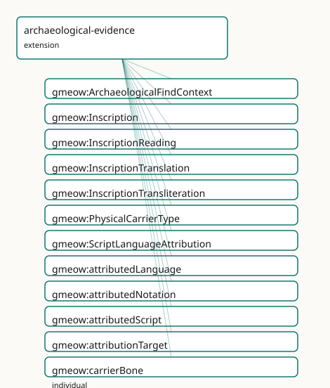

GMEOW Archaeological Evidence Module
- IRI: https://blackcatinformatics.ca/gmeow/slices/archaeological-evidence
- Tier: extension
Group: extensions
What This Slice Covers
This slice owns 37 terms and contributes 15 mapping or projection rows. Use it when its terms match the native fact you want to preserve; use the linkage tables to see how those facts leave GMEOW for consumer vocabularies.
Dependencies
gmeow:slices/eventsgmeow:slices/kernelgmeow:slices/languagegmeow:slices/observationsgmeow:slices/placesgmeow:slices/temporal
Consumers
Inscriptionreadings and find contexts; the languages stress corpus.
Local Map

Terms
Classes
| Term | Label | Definition |
|---|---|---|
gmeow:ArchaeologicalFindContext |
Archaeological Find Context | A reified find context binding a physical carrier to its stratigraphic unit, find-spot, excavation or documentation event, and dating evidence. A single carrie... |
gmeow:Inscription |
Inscription | The sign-bearing content or mark on a physical carrier — a text, sequence of signs, or symbolic marking that is informationally distinct from the material obje... |
gmeow:InscriptionReading |
Inscription Reading | A scholarly reading of an inscription — the Observation that produces a LexicalForm from a sign-bearing feature. The reading is a standpoint-scoped claim, not... |
gmeow:InscriptionTranslation |
Inscription Translation | A translation of an inscription into another language — an Observation that produces a LexicalForm representing the meaning of the source inscription in a targ... |
gmeow:InscriptionTransliteration |
Inscription Transliteration | A transliteration of an inscription into another script — an Observation that maps sign sequences from one writing system to another, producing a LexicalForm.... |
gmeow:PhysicalCarrierType |
Physical Carrier Type | The archaeological or cultural-heritage classification of a physical object that bears inscriptions, marks, or signs — a value vocabulary (individuals, never s... |
gmeow:ScriptLanguageAttribution |
Script Language Attribution | A standpoint-scoped claim assigning a language, writing system, or notation system to an inscription. Handles disputed, uncertain, and undeciphered cases: an u... |
Properties
| Term | Label | Definition |
|---|---|---|
gmeow:attributedLanguage |
attributed language | The language assigned to an inscription by a script/language attribution. Non-functional: competing language assignments from different standpoints coexist (Pr... |
gmeow:attributedNotation |
attributed notation | The notation system assigned to an undeciphered or symbol-classified inscription. Non-functional: used when the inscription is not yet linked to a known langua... |
gmeow:attributedScript |
attributed script | The writing system assigned to an inscription by a script/language attribution. Non-functional: competing script assignments coexist (Principle 9). |
gmeow:attributionTarget |
attribution target | The inscription being classified by a script/language attribution. Functional per relator: one target inscription per ScriptLanguageAttribution. |
gmeow:carrierInscription |
carrier inscription | The inscription(s) borne by a physical carrier. Non-functional: a carrier may bear multiple inscriptions (e.g. a tablet with text on both sides, or a wall with... |
gmeow:carrierType |
carrier type | The archaeological or cultural-heritage classification of a physical carrier — a value vocabulary individual from gmeow:PhysicalCarrierType. Non-functional: a... |
gmeow:findContextDating |
find context dating | The temporal measurement(s) assigned to a carrier's find context — radiocarbon, stratigraphic correlation, terminus post quem, etc. Non-functional: multiple da... |
gmeow:findContextEvent |
find context event | The excavation, survey, or documentation event during which a carrier was discovered or recorded. Non-functional: a carrier may be rediscovered or re-documente... |
gmeow:findContextPlace |
find context place | The find-spot or locus where a carrier was discovered. Non-functional: a carrier may be associated with multiple place claims (e.g. ancient find-spot vs modern... |
gmeow:findContextStratigraphy |
find context stratigraphy | The stratigraphic unit or layer associated with a carrier's find context. Range is gmeow:Entity (opaque reference) because general stratigraphic domain modelin... |
gmeow:findContextTarget |
find context target | The physical carrier whose find context is being described. Functional per relator: one target carrier per ArchaeologicalFindContext. |
gmeow:inscriptionCarrier |
inscription carrier | The physical object that bears an inscription. Functional: an inscription is borne by exactly one carrier (if a copy exists on another carrier, it is a distinc... |
gmeow:readingOf |
reading of | The inscription that a reading observes. Functional per relator: one source inscription per InscriptionReading. |
gmeow:readingResult |
reading result | The lexical form(s) produced by a reading. Non-functional: a single reading may yield multiple coexisting forms (e.g. ambiguous or damaged signs interpreted di... |
gmeow:translationOf |
translation of | The inscription that a translation renders into another language. Functional per relator: one source inscription per InscriptionTranslation. |
gmeow:translationResult |
translation result | The lexical form(s) produced by a translation. Non-functional: competing translations of the same inscription coexist without privilege (Principle 9). |
gmeow:transliterationOf |
transliteration of | The inscription that a transliteration maps into another script. Functional per relator: one source inscription per InscriptionTransliteration. |
gmeow:transliterationResult |
transliteration result | The lexical form(s) produced by a transliteration. Non-functional: competing transliteration schemes may produce different forms for the same inscription, and... |
Individuals
| Term | Label | Definition |
|---|---|---|
gmeow:carrierBone |
bone | A bone object or fragment bearing carved or inked signs. |
gmeow:carrierCoin |
coin | A metallic disc bearing stamped legends, symbols, or portraits. |
gmeow:carrierManuscript |
manuscript | A handwritten document on parchment, papyrus, paper, or other flexible support. |
gmeow:carrierMetal |
metal | A metal object or fragment bearing inscribed, cast, or stamped text. |
gmeow:carrierOstracon |
ostracon | A potsherd or stone flake bearing ink or incised writing. |
gmeow:carrierPapyrus |
papyrus | A sheet of papyrus bearing written or drawn content. |
gmeow:carrierPotterySherd |
pottery sherd | A fragment of ceramic vessel, often bearing painted or incised marks. |
gmeow:carrierSeal |
seal | A stamped or engraved object used to impress a design or text into clay or wax. |
gmeow:carrierStela |
stela | An upright stone slab or pillar bearing inscribed text or relief. |
gmeow:carrierTablet |
tablet | A flat slab of clay, stone, or wax bearing inscribed text. |
gmeow:carrierWallInscription |
wall inscription | Text or signs carved, painted, or affixed to a wall or other architectural surface. |
gmeow:carrierWood |
wood | A wooden object or fragment bearing inscribed, painted, or burned text. |
Linkages
- Rows: 15
- Projection profiles: -
- External vocabularies:
crm,crmarc,crminf,crmsci,oa,prov
| Source | Kind | Profile | Predicate/Relation | Target | Evidence |
|---|---|---|---|---|---|
gmeow:ArchaeologicalFindContext |
equivalence | - |
skos:closeMatch | crmarc:A2_Stratigraphic_Volume_Unit | gmeow-archaeological-evidence.sssom.tsv; gmeow:eqArch005; confidence 0.7 |
gmeow:Inscription |
equivalence | - |
skos:closeMatch | crm:E34_Inscription | gmeow-archaeological-evidence.sssom.tsv; gmeow:eqArch001; confidence 0.95 |
gmeow:InscriptionReading |
equivalence | - |
skos:closeMatch | crmsci:S4_Observation | gmeow-archaeological-evidence.sssom.tsv; gmeow:eqArch007; confidence 0.85 |
gmeow:InscriptionReading |
equivalence | - |
skos:closeMatch | oa:Annotation | gmeow-archaeological-evidence.sssom.tsv; gmeow:eqArch014; confidence 0.75 |
gmeow:InscriptionReading |
equivalence | - |
skos:closeMatch | prov:Activity | gmeow-archaeological-evidence.sssom.tsv; gmeow:eqArch012; confidence 0.85 |
gmeow:InscriptionTranslation |
equivalence | - |
skos:closeMatch | crmsci:S4_Observation | gmeow-archaeological-evidence.sssom.tsv; gmeow:eqArch009; confidence 0.85 |
gmeow:InscriptionTranslation |
equivalence | - |
skos:closeMatch | oa:Annotation | gmeow-archaeological-evidence.sssom.tsv; gmeow:eqArch016; confidence 0.75 |
gmeow:InscriptionTransliteration |
equivalence | - |
skos:closeMatch | crmsci:S4_Observation | gmeow-archaeological-evidence.sssom.tsv; gmeow:eqArch008; confidence 0.85 |
gmeow:InscriptionTransliteration |
equivalence | - |
skos:closeMatch | oa:Annotation | gmeow-archaeological-evidence.sssom.tsv; gmeow:eqArch015; confidence 0.75 |
gmeow:ScriptLanguageAttribution |
equivalence | - |
skos:closeMatch | crminf:I1_Argumentation | gmeow-archaeological-evidence.sssom.tsv; gmeow:eqArch010; confidence 0.9 |
gmeow:ScriptLanguageAttribution |
equivalence | - |
skos:closeMatch | crminf:I5_Inference_Making | gmeow-archaeological-evidence.sssom.tsv; gmeow:eqArch011; confidence 0.8 |
gmeow:carrierInscription |
equivalence | - |
skos:closeMatch | crm:P128_carries | gmeow-archaeological-evidence.sssom.tsv; gmeow:eqArch004; confidence 0.9 |
gmeow:findContextStratigraphy |
equivalence | - |
skos:closeMatch | crmarc:A2_Stratigraphic_Volume_Unit | gmeow-archaeological-evidence.sssom.tsv; gmeow:eqArch006; confidence 0.75 |
gmeow:inscriptionCarrier |
equivalence | - |
skos:closeMatch | crm:P128i_is_carried_by | gmeow-archaeological-evidence.sssom.tsv; gmeow:eqArch003; confidence 0.9 |
gmeow:readingResult |
equivalence | - |
skos:closeMatch | prov:generated | gmeow-archaeological-evidence.sssom.tsv; gmeow:eqArch013; confidence 0.8 |
Guide
Archaeological & Cultural-Heritage Evidence — modelling & interoperability guide
Archaeological objects are evidence carriers, not language facts by themselves. The physical carrier, the visible marks, the observation/documentation event, the reading, the transliteration, the translation, the dating evidence, the stratigraphic / find context, and the linguistic interpretation must remain separable claims (Principle 9).
This guide explains the language-facing hooks that connect GMEOW's lexicon, attestation, and etymology layers to archaeological and cultural-heritage evidence. General archaeological domain modeling (excavation units, stratigraphic interfaces, artifact typology) is deferred to.
The layer stack
| Layer | GMEOW construct | Example |
|---|---|---|
| Physical carrier | gmeow:PhysicalObject + gmeow:carrierType |
A clay tablet, an ostracon, a seal impression |
| Sign-bearing feature | gmeow:Inscription |
The cuneiform text on the tablet |
| Documentation event | gmeow:Observation (universal stack) |
The excavation, photography, or museum cataloguing |
| Reading | gmeow:InscriptionReading → gmeow:LexicalForm |
"𒀭" read as the sign AN |
| Transliteration | gmeow:InscriptionTransliteration → gmeow:LexicalForm |
"an" in Latin script |
| Translation | gmeow:InscriptionTranslation → gmeow:LexicalForm |
"god" in English |
| Dating evidence | gmeow:TemporalMeasurement |
Stratigraphic correlation, 3200 ± 100 BP |
| Find context | gmeow:ArchaeologicalFindContext |
Trench 3, Layer 7, Uruk site |
| Linguistic interpretation | gmeow:ScriptLanguageAttribution |
Sumerian language, cuneiform script |
Each layer is a distinct node in the graph. No single layer asserts truth for
another. A PhysicalObject does not "have a language"; an Inscription does not
"have a date"; a Reading does not "have a find-spot". These are all mediated by
reified Observation subclasses that carry gmeow:vantage, gmeow:confidence,
gmeow:hasDeterminacy, and gmeow:accordingTo.
Critical anti-pattern
Never assert "this object is in language X" as unqualified truth when the evidence is actually "scholar/team Y reads this mark as X, with confidence Z, in context C."
Bad (flat, truth-asserting):
# WRONG — collapses carrier, inscription, and interpretation into one claim
ex:tablet1 ex:claimedLanguage ex:sumerian .
Good (layered, standpoint-scoped):
ex:tablet1 a gmeow:PhysicalObject ;
gmeow:carrierType gmeow:carrierTablet .
ex:inscription1 a gmeow:Inscription ;
gmeow:inscriptionCarrier ex:tablet1 .
ex:attribution1 a gmeow:ScriptLanguageAttribution ;
gmeow:attributionTarget ex:inscription1 ;
gmeow:attributedLanguage ex:sumerian ;
gmeow:attributedScript ex:cuneiform ;
gmeow:vantage ex:scholarA ;
gmeow:confidence 0.85 ;
gmeow:hasDeterminacy gmeow:determinacyCrisp .
The first form is a category error: a physical object does not have a language. The second form keeps every claim attributed, dated, and confidence-weighted (Principle 9).
Competing claims coexist
Two scholars may read the same inscription differently, assign it to different languages, or date it to different periods. In GMEOW, these are co-existing observations, not edit-war candidates.
ex:readingA a gmeow:InscriptionReading ;
gmeow:readingOf ex:inscription1 ;
gmeow:readingResult ex:formA ;
gmeow:vantage ex:scholarA ;
gmeow:confidence 0.75 .
ex:readingB a gmeow:InscriptionReading ;
gmeow:readingOf ex:inscription1 ;
gmeow:readingResult ex:formB ;
gmeow:vantage ex:scholarB ;
gmeow:confidence 0.60 .
Both readings are retained. Projection layers may select one for a specific
consumer, but the canonical source never erases the other (Principle 10:
suppression via gmeow:displayable false, never deletion).
Undeciphered and uncertain cases
An inscription in an undeciphered script (Linear A, Rongorongo, proto-cuneiform)
carries a gmeow:ScriptLanguageAttribution with gmeow:attributedNotation but
no gmeow:attributedLanguage or gmeow:attributedScript. Its determinacy is
gmeow:determinacyDisputed and its confidence is low.
ex:linearA a gmeow:NotationSystem .
ex:undecipheredAttribution a gmeow:ScriptLanguageAttribution ;
gmeow:attributionTarget ex:inscription2 ;
gmeow:attributedNotation ex:linearA ;
gmeow:hasDeterminacy gmeow:determinacyDisputed ;
gmeow:vantage ex:scholarC ;
gmeow:confidence 0.40 .
There is no canonical winner and no requirement to assign a language. The
notation system stands on its own as a first-class gmeow:NotationSystem.
Hooks into the lexicon layer
UsageAttestation → PhysicalObject
The gmeow:attestedOnCarrier property links a gmeow:UsageAttestation to a
gmeow:PhysicalObject, creating the bridge from lexical evidence to
archaeological evidence.
ex:attestation a gmeow:UsageAttestation ;
gmeow:attestedForm ex:lexicalForm ;
gmeow:attestedInSource ex:publishedEdition ;
gmeow:attestedOnCarrier ex:tablet1 ;
gmeow:confidence 0.90 .
EtymologicalDerivation → inscription evidence
An etymological claim may cite a gmeow:UsageAttestation (or the
gmeow:InscriptionReading directly) as gmeow:derivationEvidence.
ex:derivation a gmeow:EtymologicalDerivation ;
gmeow:derivationSource ex:ancestorWord ;
gmeow:derivationTarget ex:descendantWord ;
gmeow:derivationKind gmeow:derivationBorrowing ;
gmeow:derivationEvidence ex:attestation ;
gmeow:confidence 0.65 .
LanguageState → inscription
A gmeow:LanguageState may describe the language of an inscription at a
particular historical moment, reusing the existing language-state machinery.
Projection lossy drops
When projecting the archaeological evidence stack to surface vocabularies, the following information is deliberately dropped (Principle 4):
| Target vocabulary | What is lost |
|---|---|
| CIDOC-CRM | Standpoint, confidence, determinacy, and competing claims collapse to a single E13 Attribute Assignment or E34 Inscription. The gmeow:Inscription → E34 mapping loses the separation between InformationObject and PhysicalObject when the consumer does not distinguish them. |
| CRMarchaeo | Stratigraphic detail below the A2 level is dropped; excavation events lose their observer standpoints. |
| CRMsci | S4 Observation loses the reified relator structure; the result is flattened to s15:has_result. |
| CRMinf | I1 Argumentation preserves the dispute structure, but the temporal scope and find context are lost. I2 Belief carries the confidence, but not the stratigraphic provenance. |
| PROV-O | prov:Activity flattens the Observation relator; prov:Entity for the inscription loses its carrier link. The standpoint becomes prov:wasAssociatedWith without the modal force. |
| Web Annotation | oa:Annotation preserves target + body, but drops confidence, determinacy, dating, find context, and competing claims (only one annotation per target→body pair). |
| AO-Cat / ARIADNE | Archaeological object typology is preserved, but language/script attribution, transliteration, and translation are out of scope for these catalogues. |
| schema.org | No suitable target for inscription, reading, or transliteration. The closest is schema:CreativeWork for the published edition, which loses all archaeological context. |
Alignment summary
| GMEOW term | Closest external term | Confidence | Note |
|---|---|---|---|
gmeow:Inscription |
crm:E34_Inscription |
0.95 | GMEOW is broader (marks, symbols, non-linguistic signs) |
gmeow:PhysicalObject |
crm:E19_Physical_Object |
0.90 | E24 is narrower (human-made only) |
gmeow:inscriptionCarrier |
crm:P128_carries |
0.90 | Inverse: crm:P128i_is_carried_by |
gmeow:InscriptionReading |
crmsci:S4_Observation |
0.85 | Also close to crm:E13_Attribute_Assignment |
gmeow:ScriptLanguageAttribution |
crminf:I1_Argumentation |
0.90 | I5 Inference Making when inferred from evidence |
gmeow:ArchaeologicalFindContext |
crmarc:A2_Stratigraphic_Volume_Unit |
0.70 | Loose: A2 is spatial, FindContext is a claim |
gmeow:InscriptionReading |
prov:Activity |
0.85 | Reading generates prov:Entity (LexicalForm) |
gmeow:InscriptionReading |
oa:Annotation |
0.75 | Lossy: drops confidence, determinacy, context |
Tests
tests/test_archaeological_evidence.py— structural and DL-safety guards.tests/fixtures/shapes/archaeological-evidence.ttl— SHACL-valid instance data.tests/fixtures/coverage/archaeological-evidence.ttl— competency-test coverage data.